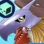
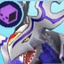
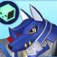
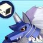
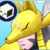
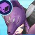

해커스 메모리해커스 메모리에 등장하는 디지몬이라 게임 도감에서는 아이콘이 ?로 표시돼요.
- 세대
- 궁극체
- 종족
 바이러스
바이러스- 속성
 어둠
어둠- 소비 메모리
- 20
- 장비 슬롯
- 2
스테이터스 (Lv.99)
HP195052위/98
SP20720위/98
ATK14581위/98
INT16859위/98
DEF15874위/98
SPD21730위/98
막대 길이는 등록된 디지몬 중 최고값 대비 비율이에요. 순위는 스테이터스가 등록된 디지몬끼리 비교해요.
필살기 1
도트 매트릭스  무 방어력 관통SP 35
무 방어력 관통SP 35
적 1체물리위력 강한
디지몬 속성(어둠)과 다름
적 1체에 무속성 강한 위력 방어력 관통공격을 하고 30%를 HP로 흡수한다. 필중.
상성별 대미지 배율 상대 종족(세로) · 속성(가로)상대 속성(세로) · 종족(가로)
×3 이상×2 이상보통×1 미만
| 상대 ↓ / → | |||||||||
|---|---|---|---|---|---|---|---|---|---|
| 백신 | ×0.50 | ×0.50 | ×0.50 | ×0.50 | ×0.50 | ×0.50 | ×0.50 | ×0.50 | ×0.50 |
| 데이터 | ×2.00 | ×2.00 | ×2.00 | ×2.00 | ×2.00 | ×2.00 | ×2.00 | ×2.00 | ×2.00 |
| 바이러스 | ×1.00 | ×1.00 | ×1.00 | ×1.00 | ×1.00 | ×1.00 | ×1.00 | ×1.00 | ×1.00 |
| 프리 | ×1.00 | ×1.00 | ×1.00 | ×1.00 | ×1.00 | ×1.00 | ×1.00 | ×1.00 | ×1.00 |
| ×0.50 | ×2.00 | ×1.00 | ×1.00 | |
| ×0.50 | ×2.00 | ×1.00 | ×1.00 | |
| ×0.50 | ×2.00 | ×1.00 | ×1.00 | |
| ×0.50 | ×2.00 | ×1.00 | ×1.00 | |
| ×0.50 | ×2.00 | ×1.00 | ×1.00 | |
| ×0.50 | ×2.00 | ×1.00 | ×1.00 | |
| ×0.50 | ×2.00 | ×1.00 | ×1.00 | |
| ×0.50 | ×2.00 | ×1.00 | ×1.00 | |
| ×0.50 | ×2.00 | ×1.00 | ×1.00 |
배율 칸을 누르면 계산식이 여기에 나와요.
SS(서포트스킬)
이상향
즉사에 걸릴 확률을 50% 저하하고 크리티컬 발생률이 10% 상승한다.
계승기 (레벨업 습득) 5
이 디지몬이 레벨업으로 배우는 스킬이에요. 배운 스킬은 진화·퇴화해도 계속 쓸 수 있어요.
| 습득 Lv | 스킬 | 속성 | SP |
|---|---|---|---|
| 20 | 디스트로이 캐논 III 적 1체에 어둠속성 위력 105의 물리공격. 명중률 95%. | 9 | |
| 35 | 스피드 브레이크 필드 적 전체의 민첩을 10% 내린다. | 20 | |
| 50 | 세인트 너클 III 적 1체에 빛속성 위력 105의 물리공격. 명중률 95%. | 9 | |
| 65 | 마하 러시 III 적 전체에 무속성 위력 80의 물리공격. 필중. | 10 | |
| 80 | 체인 로스트 적 1체의 콤보 발생 확률을 100% 내린다. | 8 |
이 디지몬이 강한 상대 80펼쳐 보기
등록된 디지몬 중 필살기로 ×2 이상 대미지를 줄 수 있는 상대예요. 세대를 누르면 그 세대 목록이 보여요.
궁극체 같은 세대 24 · 다른 세대 상대는 도감에서 볼 수 있어요.

그리폰몬×2.00
돌고라몬×2.00
미라쥬가오가몬×2.00
미라쥬가오가몬BM×2.00
샤크라몬×2.00
쿠즈하몬×2.00진화 가능 디지몬 1
알카디몬 초궁극체
- 레벨 70 이상
- 최대 SP가 150 필요
- 공격력이 250 필요
- 지력이 150 필요
- 민첩이 160 필요
- 재능이 60 필요
- 해커스 메모리를 클리어했다
진화 트리 · 알카디몬 궁극체까지 오는 길 + 다음 진화
왼쪽부터 진화 순서예요. 알카디몬 궁극체 오른쪽(점선 칸)은 바로 다음 진화 1단계예요. 그 뒤가 궁금하면 그 디지몬을 눌러 따라가 보세요. 선은 출발하는 디지몬의 색을 따라가요. 디지몬을 한 번 누르면 거기서 알카디몬 궁극체까지 가는 경로만 남고, 한 번 더 누르면 그 디지몬 페이지로 이동해요. 회색 칸은 아직 정보가 없는 디지몬이에요.
유년기I
유년기II
성장기
성숙기
완전체
궁극체
초궁극체 ▸